Elige el estilo de tu página.
Veinte estilos de diseño, cada uno con un negocio de ejemplo. Ábrelos, pruébalos en tu celular y quédate con el que va con tu marca. Tu página final se hace a la medida, con tus colores, fotos y textos.
-
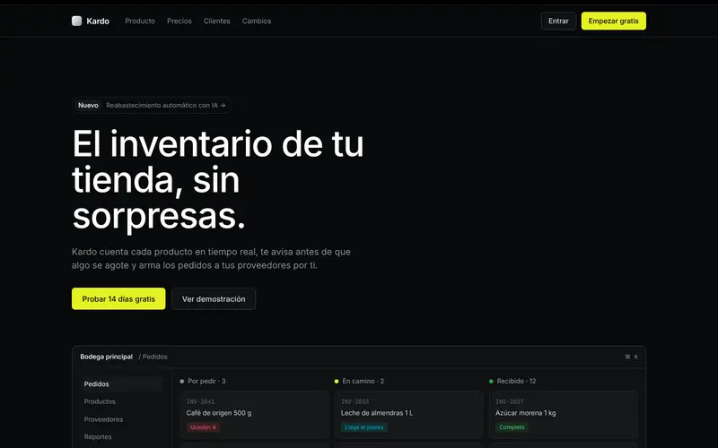
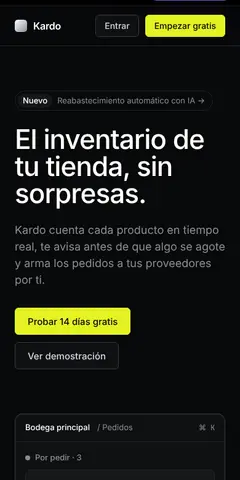
Oscuro y tecnológicoPrecisión nocturna
Negro profundo, un solo color de acción y bordes finos. Para software, startups y servicios digitales.
Ejemplo: Kardo, software de inventario -
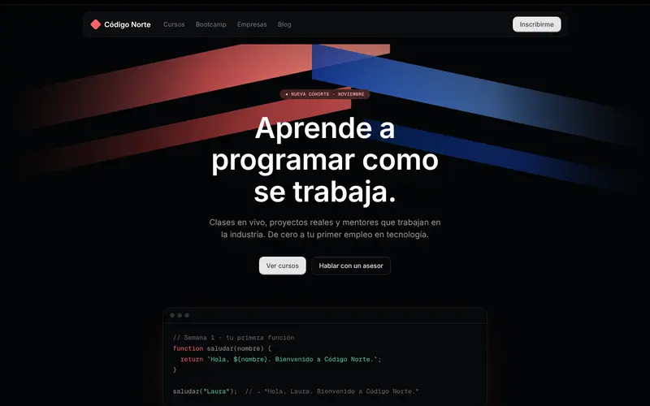
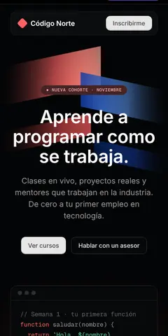
Oscuro y tecnológicoNeón coral
Fondo casi negro, destellos de color en la portada y tarjetas que parecen teclas. Para academias, tecnología y gaming.
Ejemplo: Código Norte, academia de programación -
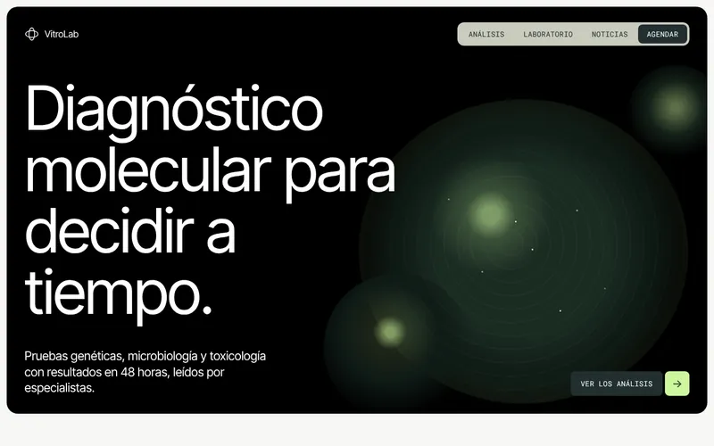
Oscuro y tecnológicoBioluminiscente
Caja negra redondeada, titulares enormes y un verde lima que brilla en los botones. Para laboratorios, salud y ciencia.
Ejemplo: VitroLab, laboratorio clínico -
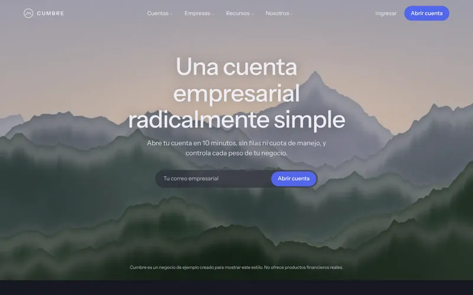
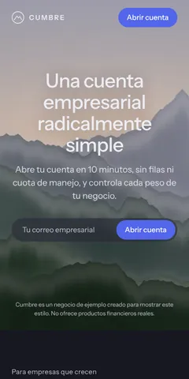
Oscuro y tecnológicoBanca alpina
Foto de paisaje a pantalla completa, fondo grafito y un azul cobalto para la acción principal. Para finanzas, seguros y consultoras.
Ejemplo: Cumbre, cuenta para empresas -
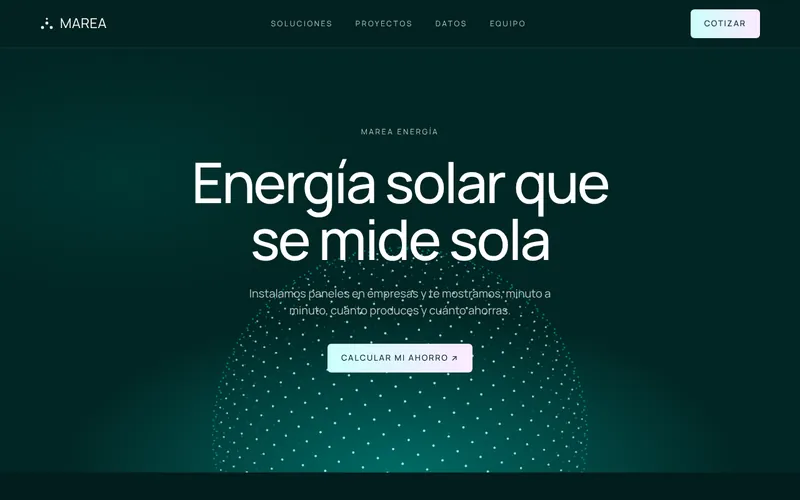
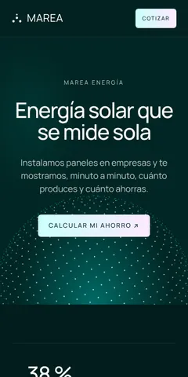
Oscuro y tecnológicoAbismo turquesa
Verde azulado profundo, una esfera de partículas en movimiento y botones con degradado. Para energía, datos e inversión.
Ejemplo: Marea, energía solar -
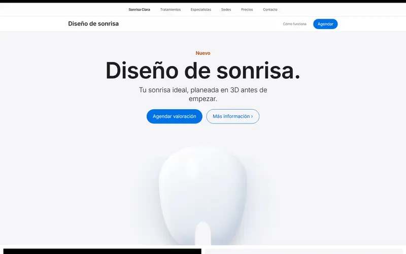
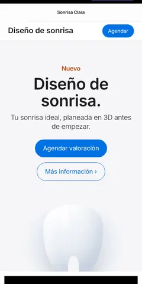
MinimalistaSala blanca
Mucho espacio en blanco, botones redondos azules y el producto como protagonista. Para salud, belleza y marcas premium.
Ejemplo: Sonrisa Clara, clínica dental -
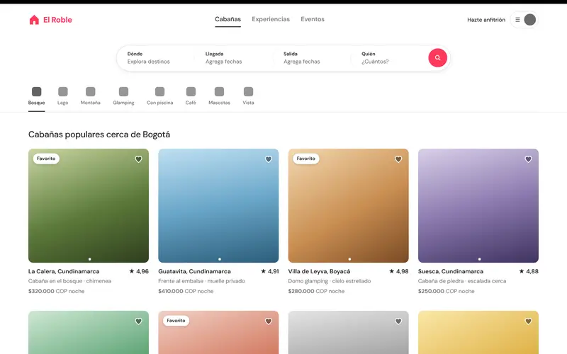
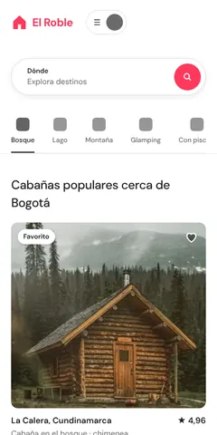
MinimalistaGalería cálida
Fondo blanco, fotos grandes y un buscador al centro. Para hospedajes, inmobiliarias y catálogos.
Ejemplo: El Roble, cabañas y glamping -
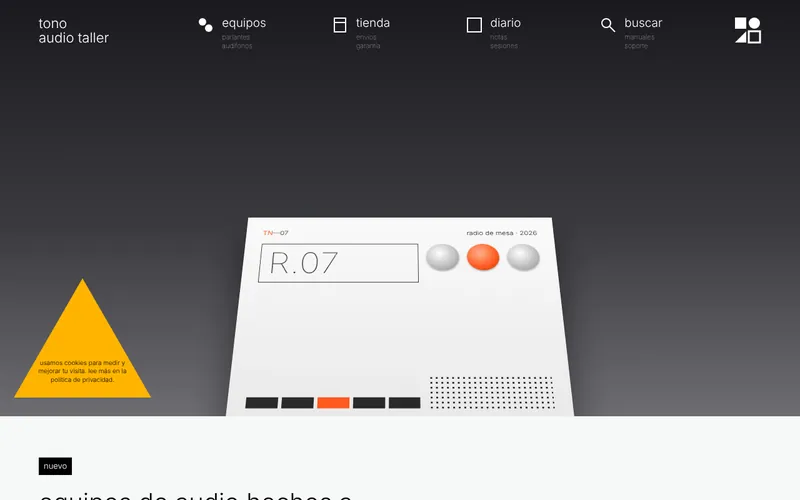
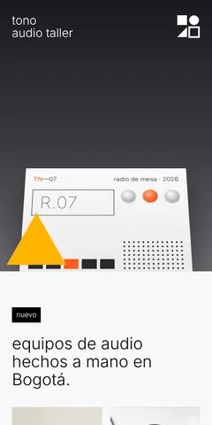
MinimalistaCatálogo industrial
Letras ultrafinas, cero esquinas redondeadas y fotos de producto en rejilla. Para tiendas de diseño, tecnología y objetos.
Ejemplo: Tono, equipos de audio -
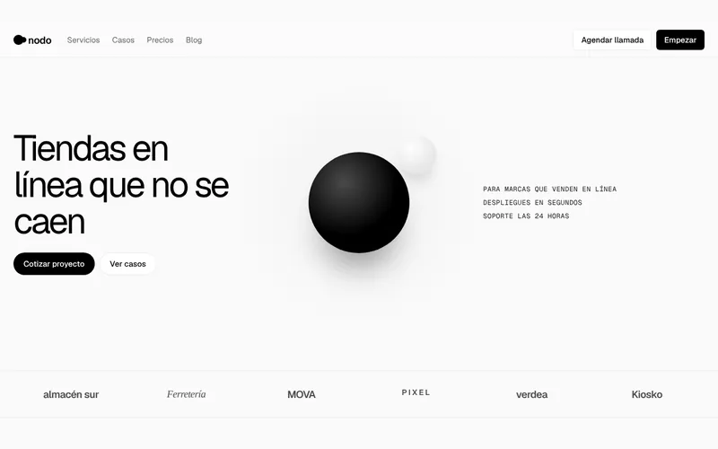
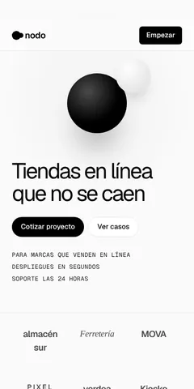
MinimalistaMonocromo
Blanco y negro puro, letra técnica y una esfera flotando en la portada. Para agencias digitales, desarrollo y SaaS.
Ejemplo: Nodo, estudio de desarrollo -
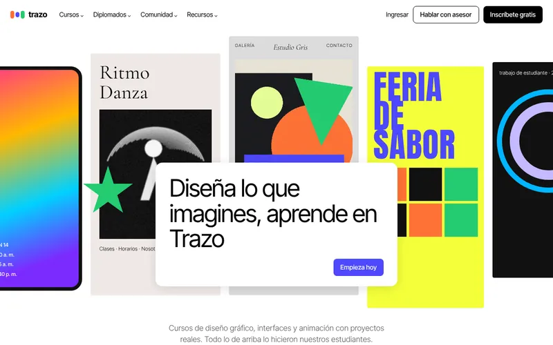
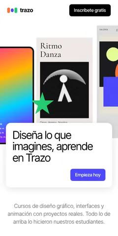
MinimalistaLienzo blanco
Un collage de trabajos a todo color con una tarjeta blanca encima. Para escuelas, estudios creativos y portafolios.
Ejemplo: Trazo, escuela de diseño -
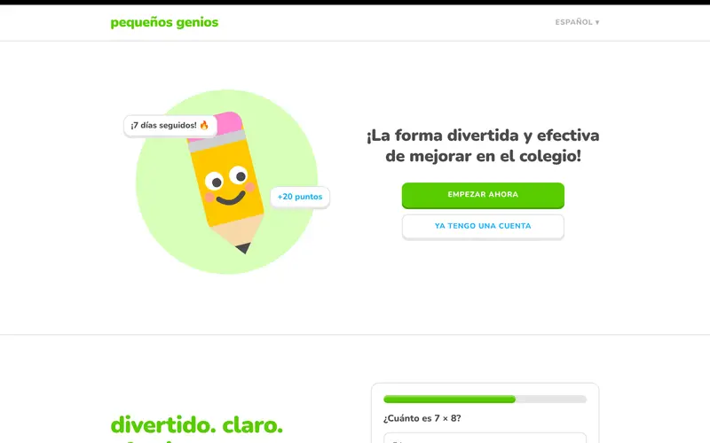
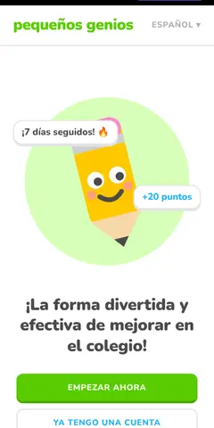
LlamativoRecreo
Letras redondas, verde brillante, botones gruesos y una mascota. Para colegios, niños y marcas juveniles.
Ejemplo: Pequeños Genios, tutorías para niños -
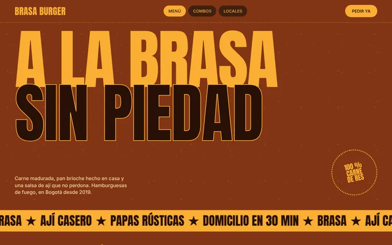
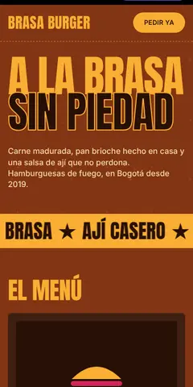
LlamativoPicante
Letras gigantes tipo cartel, colores cálidos y una cinta que se mueve. Para restaurantes, comida rápida y eventos.
Ejemplo: Brasa Burger, hamburguesería -
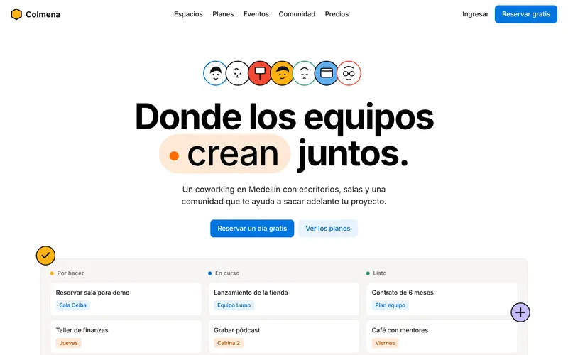
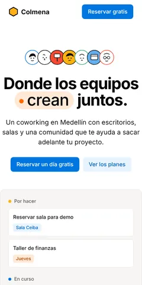
LlamativoCuaderno
Personajes dibujados, tarjetas de colores como notas adhesivas y un azul de acción. Para coworkings, comunidades y equipos.
Ejemplo: Colmena, coworking -
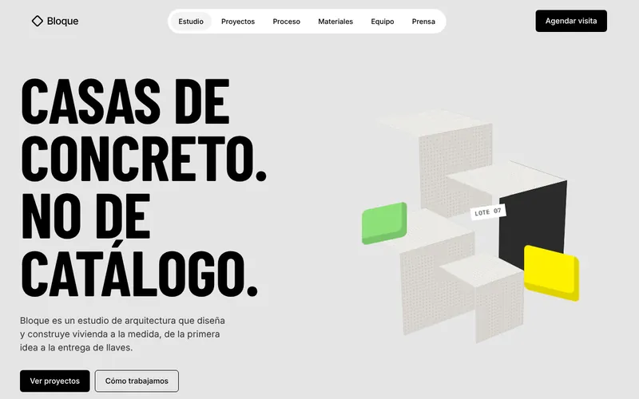
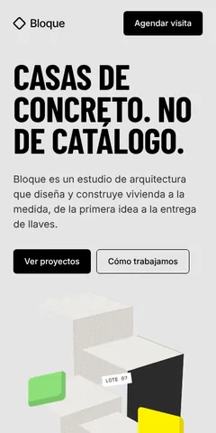
LlamativoBrutal
Titulares gigantes en mayúscula, bloques de concreto en 3D y un amarillo eléctrico. Para arquitectura, construcción y marcas atrevidas.
Ejemplo: Bloque, estudio de arquitectura -
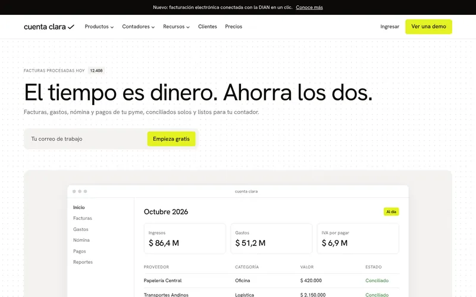
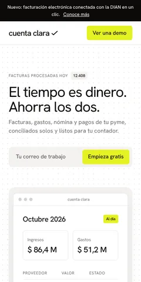
LlamativoResaltador
Blanco y negro con un amarillo resaltador solo donde importa, y el producto en pantalla. Para contabilidad, finanzas y software.
Ejemplo: Cuenta Clara, contabilidad para pymes -
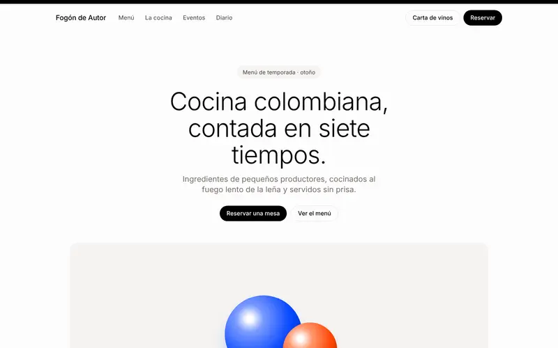
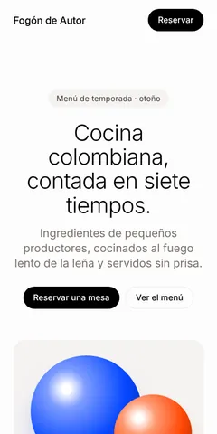
Editorial y lujoCrema editorial
Papel crema, letras finas y botones negros. Tranquilo y elegante. Para restaurantes de autor, estudios y marcas de diseño.
Ejemplo: Fogón de Autor, restaurante -
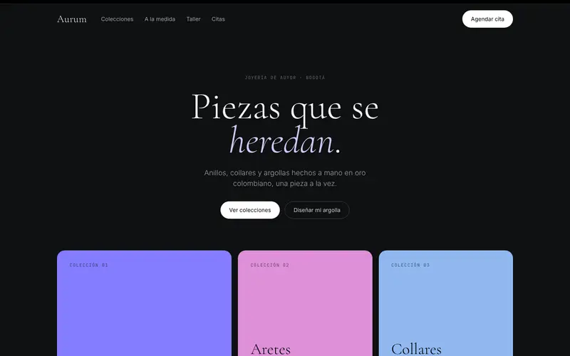
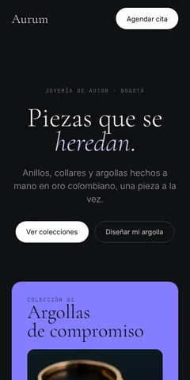
Editorial y lujoGalería nocturna
Fondo oscuro, letras con serifa muy finas y paneles de color. Para joyerías, moda, hoteles y finanzas.
Ejemplo: Aurum, joyería de autor -
Editorial y lujo
Hora dorada
Foto cinematográfica al atardecer, tarjetas de vidrio y tonos vino y lila. Para coaching, bienestar y servicios personales.
Ejemplo: Rumbo, coaching ejecutivo -
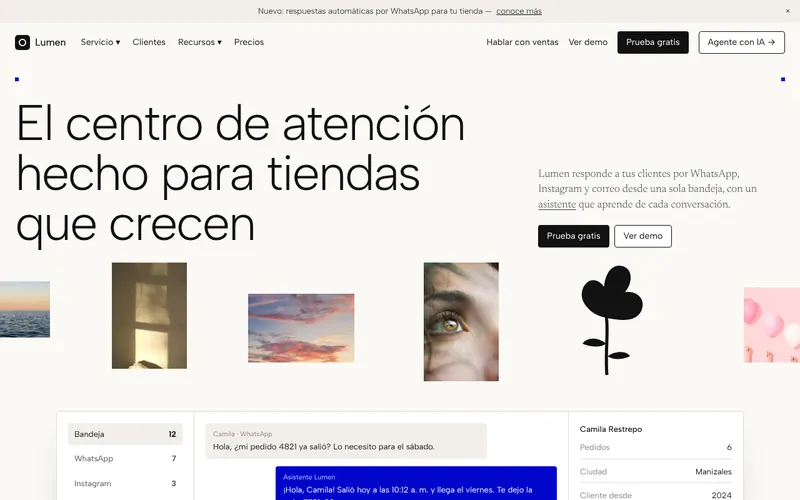
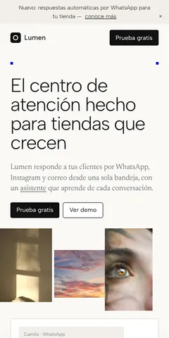
Editorial y lujoTinta y papel
Crema de revista, letras livianas, fotos pequeñas y un azul intenso. Para servicio al cliente, medios y consultoras.
Ejemplo: Lumen, atención al cliente -
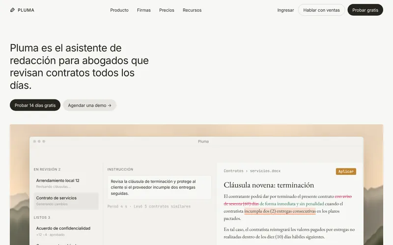
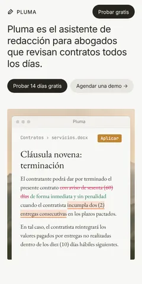
Editorial y lujoPergamino
Pergamino cálido, serifa clásica para los textos y la app sobre una pintura de paisaje. Para abogados, editoriales y software.
Ejemplo: Pluma, asistente para abogados